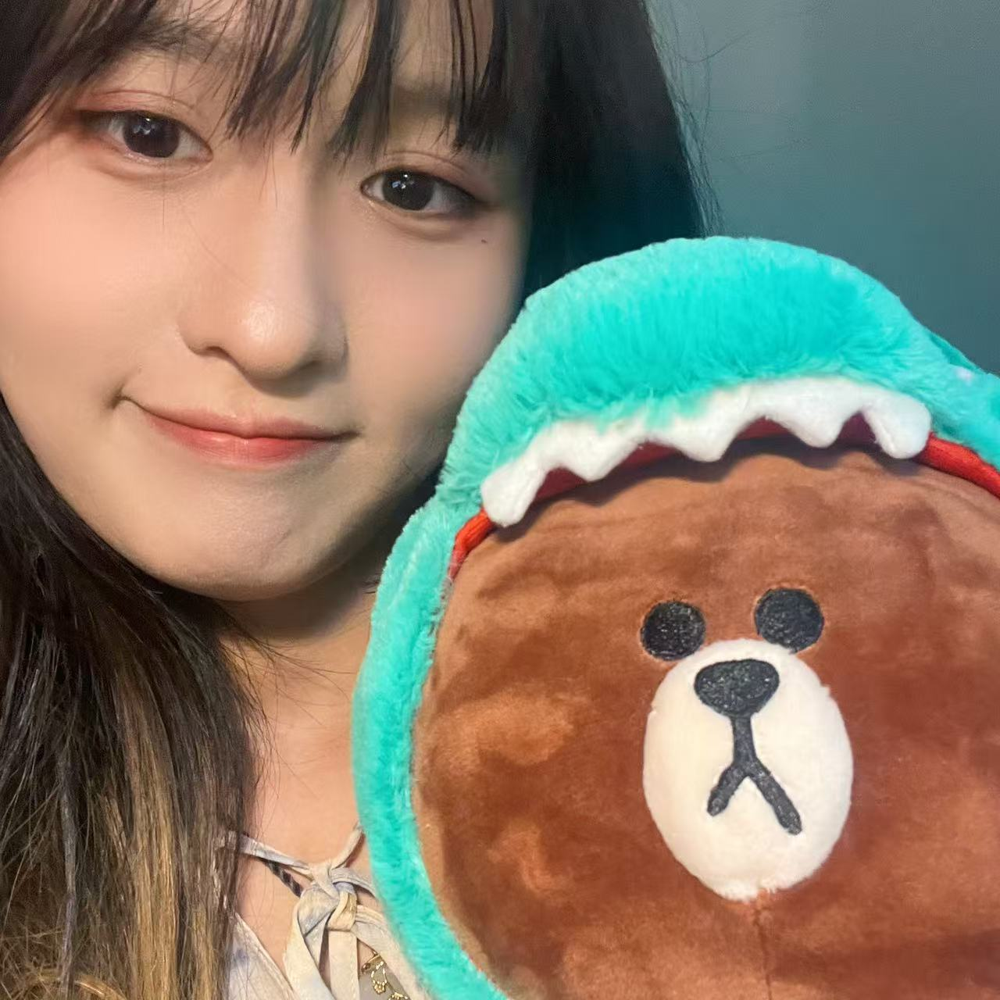

News
Jun 2025
I started as a Research Scientist Intern at Megagon Labs!
Apr 2025
I passed my QE and became a PhD candidate!
Invited Editorial Board member for International Journal of Artificial Intelligence for Science (IJAI4S). Call for Papers is running.
Mar 2025
Reviewer for ACL 2025.
Feb 2025
Invited Reviewer for NAACL 2025.
Invited Reviewer for ICME 2025.
|
 |
Yue Zhang （CN: 张玥）
Email: skywalkerzhang19 AT gmail.com
|
Yue Zhang is a Ph.D. candidate at the University of Texas at Dallas supervised by Prof. Vibhav Gogate. She received her Master’s degree in Advanced Computer Science from the University of Manchester in 2021 and her Bachelor’s degree in Computer Science and Technology from Zhejiang Normal University in 2020. Her research focuses on Multimodal Large Models (MLMs), Multimodal Reasoning, and related fields. She is particularly interested in Video Large Multimodal Models (VLMMs) and Reinforcement Learning.
Education
| The University of Texas at Dallas Ph.D. in Computer Science, Aug. 2023 - present Advisor: Vibhav Gogate |
| University of Manchester Master in Advanced Computer Science, Sep. 2020 - Dec. 2021 Msc Project Advisor: David Wong |
| Zhejiang Normal University Bachelor in Computer Science and Technology, Sep. 2016 - Jul. 2020 |
Experiences
| Research Scientist Intern, Megagon Labs, Jun. 2025 -- Aug. 2025 |
| Research Assistant, Hongkong University of Science and Technology, Apr. 2022 -- Mar. 2023 Advisor: Sung Hun Kim, Lucy Park |
Papers
Tutorial| Tutorial Proposal: Hallucinations in Large Language Models and Large Vision-Language Models.
Liqiang Jing, Yue Zhang & Xinya Du ICMR 2025 |
| LMR-BENCH: Evaluating LLM Agent's Ability on Reproducing Language Modeling Research
Shuo Yan, Ruochen Li, Ziming Luo, Zimu Wang, Daoyang Li, Liqiang Jing, Kaiyu He, Peilin Wu, George Michalopoulos, Yue Zhang, Ziyang Zhang, Mian Zhang, Zhiyu Chen & Xinya Du |
|
| Speech Recognition on TV Series with Video-guided Post-Correction.
Yue Zhang*, Haoyuan Yang* & Liqiang Jing |
|
| Can Video Large Multimodal Models Think Like Doubters-or Double-Down: A Study on Defeasible Video Entailment.
Yue Zhang, Jilei Sun, Yunhui Guo & Vibhav Gogate |
| Can Large Vision Language Models Understand Sarcasm?
Yue Zhang*, Xinyu wang*, Liqiang Jing CIKM 2025 |
|
| Defeasible Visual Entailment: Benchmark, Evaluator, and Reward-Driven Optimization.
Yue Zhang, Liqiang Jing & Vibhav Gogate AAAI 2025 |
|
| Fine-grained and Explanable Factuality Evaluation for Multimodal Summarization.
Yue Zhang, Jingxuan Zuo & Liqiang Jing DOCUI @ AAAI 2025 |
| A Unified Hallucination Mitigation Framework for Large Vision-Language Models.
Liqiang Jing, Yue Chang, Xiaopeng Zhang & Yue Zhang TMLR |
Teaching Assistant
|
Spring 2025, CS 4375 Introduction to Machine Learning, the University of Texas at Dallas Spring & Fall 2024, CS 4337 Programming Language, the University of Texas at Dallas Fall 2023, CS 4337 Programming Language, CS 4375 Introduction to Machine Learning, the University of Texas at Dallas |
Professional Services
|
Invited Reviewer for Conferences:
2025: ACL, NAACL, ICME. |
Honors
|
President’s Special Award, Zhejiang Normal University, 2020 Government Scholarship Awarded by the Education Department of Zhejiang Province, 2018 First Class Scholarship, Zhejiang Normal University, 2017, 2018, 2019 |